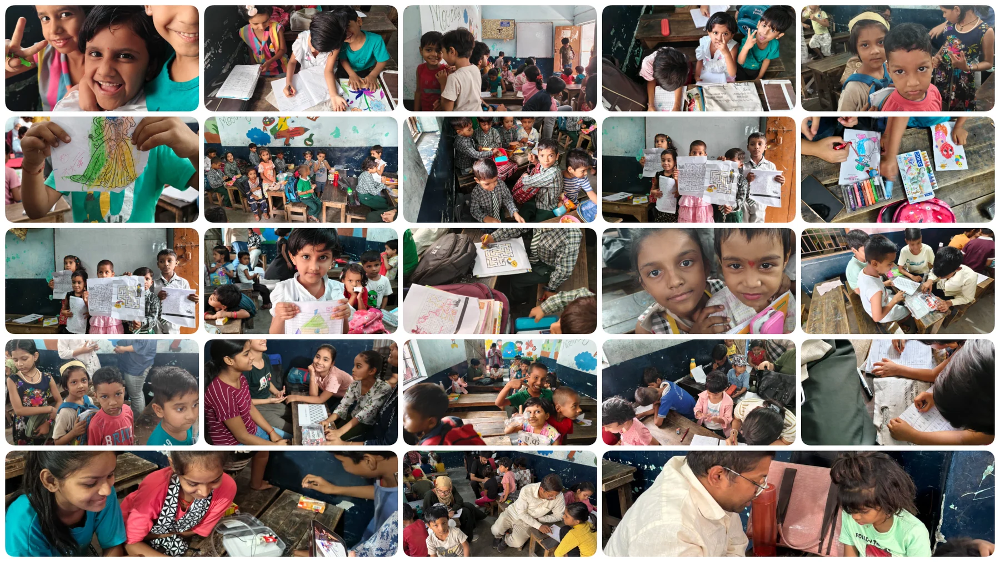
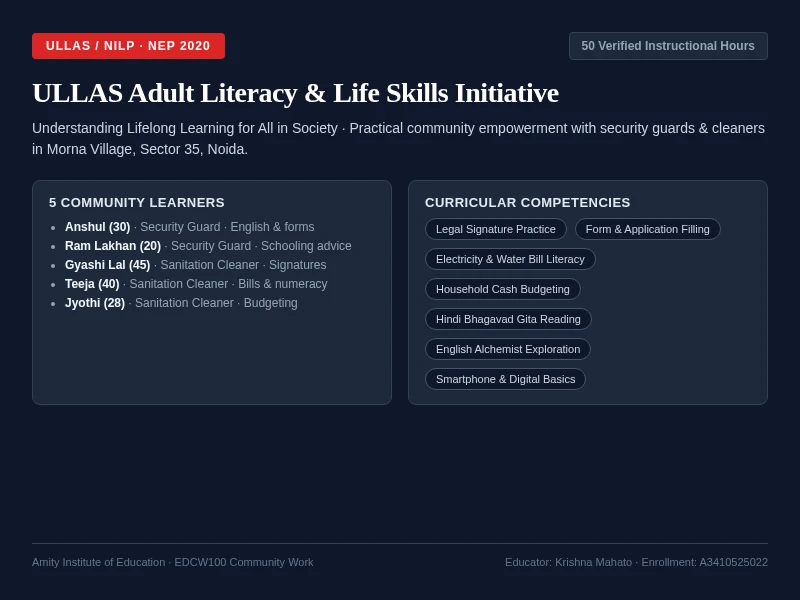

AMITY UNIVERSITY UTTAR PRADESH · AMITY INSTITUTE OF EDUCATION
Course EDCW100: Community Work & Adult Literacy
The Teaching & Community Context
As part of the B.Ed. curriculum (Course EDCW100) at Amity Institute of Education, Krishna Mahato completed an intensive five-week community engagement (1 June to 6 July 2026). The field practice addressed two distinct educational imperatives: providing foundational literacy and numeracy (FLN) to 4–6 year old kindergarten children at Pehchaan The Street School in the Morna Village slum area of Sector 35, Noida; and delivering 50 hours of adult literacy and life-skills instruction to five community sanitation and security workers under the Government of India’s ULLAS (Understanding Lifelong Learning for All in Society) initiative.
Key Responsibilities & Practicum Milestones
- Completed 80 verified hours teaching foundational literacy and numeracy to Nursery, LKG and UKG learners (ages 4–6) at Pehchaan The Street School in Morna Village, Sector 35, Noida.
- Conducted 50 hours of adult literacy and critical life-skills instruction for five community workers (security guards and sanitation cleaners) under the Government of India ULLAS / NILP initiative.
- Designed and administered a 40-mark UKG diagnostic assessment test alongside multi-sensory tracing sheets, Maths Market real-world currency simulations, and Mystery Bag vocabulary games.
- Authored and submitted a 27-page academic NTCC report (EDCW100) under Faculty Guide Dr. Neetu Mishra Shukla and Founder Akash Tandon, verified with a 6% Turnitin score.
Chapter 1: Child Education at Pehchaan The Street School (80 Verified Hours)
Pehchaan The Street School operates an informal learning centre in Morna Village (Sector 35, Noida), catering primarily to children of migrant construction laborers, sanitation workers, and informal daily-wage earners. Baseline testing during Week 1 revealed critical educational vulnerabilities: several children enrolled in Class 4 at local municipal schools could not construct basic sentences or recognize Hindi and English alphabets with stability. Consequently, instruction was restructured from rote memorization into tiered, competency-based, and multi-sensory learning.

Figure 1: Archival classroom evidence: kindergarten visual-motor maze worksheets, letter formation on chalkboards, small-group reading circles, and peer numeracy practice.
Weekly Pedagogical Trajectory (80 Hours Total)
| Week & Duration | Focus Competencies | Pedagogical Methods & Materials |
|---|---|---|
| Week 1 (1–6 June) 14 Hours |
Induction & Baseline Assessment; Fine-motor grip; A–Z & 1–100 recognition | Orientation by Founder Akash Tandon; baseline diagnostic evaluation of 25+ children; ability grouping; straight and curved line tracing worksheets; daily 15-minute shape drawing. |
| Week 2 (8–14 June) 18 Hours |
Visual-motor maze tracing; Numbers 1–50; Geometric shape integration | Dotted line tracing for emergent writers; elimination alphabet recitation loop game; creative vehicle/doll drawing combining circles, squares and rectangles; robotics demonstration observation. |
| Week 3 (15–21 June) 18 Hours |
Phonetic word association; Hindi Varnamala; Differentiated addition/subtraction | English phonics (A for Axe, Apple; B for Ball); call-and-response Hindi akshar drills; differentiated maths groupings (1-digit addition/subtraction for advanced; counting for beginners). |
| Week 4 (22–28 June) 12 Hours |
Vocabulary-to-illustration; 2-digit carry-over addition; Public speaking | Bilingual word-to-picture matching worksheets; multi-step carry-over scaffolding on chalkboard; daily confidence-building student spoken presentations. |
| Week 5 (29 June – 6 July) 18 Hours |
Experiential "Maths Market"; 40-mark diagnostic post-assessment; Vocabulary games | Storytelling reading circles (rabbit-tortoise fable); simulated currency marketplace calculating fruit costs; comprehensive 40-mark UKG diagnostic evaluation (>60% improvement demonstrated); "Mystery Bag" vocabulary mime and drawing game; farewell celebrations. |
Diagnostic Assessment Instrument (UKG Foundational Skills Test)
To measure learning gains objectively across the 80 hours, Krishna developed and administered a structured 40-mark diagnostic evaluation sheet (documented in Annexure 2 of the NTCC Report). The instrument tested seven core foundational domains:
Language & Phonics (15 Marks)
English alphabet missing letters (A–Z), Hindi Varnamala akshar completion (अ–ह, क–ण), and bilingual picture-word matching (Apple, Ball, Mango, Cat, Sun).
Numeracy & Geometry (25 Marks)
Number sequencing 1–100, concrete shape counting (triangles, circles, squares, stars), 8 single-digit addition problems, and 7 subtraction problems.
Chapter 2: ULLAS Adult Literacy & Life Skills Initiative (50 Verified Hours)
Parallel to kindergarten teaching, Krishna conducted 50 hours of instructional engagement under the Government of India’s centrally sponsored ULLAS (Understanding Lifelong Learning for All in Society) initiative, the flagship New India Literacy Programme (NILP) aligned with the National Education Policy (NEP 2020). Designed for non-literates and neo-literates aged 15 and above, the sessions were tailored to five adult community workers residing and working in Noida Sector 35.

Figure 2: Adult community literacy sessions: signature practice, form-filling, reading excerpts from Paulo Coelho's The Alchemist and Bhagavad Gita, and digital bill literacy.
Learner Profiles & Differentiated Needs
| Learner | Age & Occupation | Educational Background | Curricular Goals & Outcomes |
|---|---|---|---|
| Anshul | 30 Yrs · Security Guard | Completed Class 8th | Spoken English communication, formal letter drafting, bank slip completion, smartphone digital utility apps. |
| Ram Lakhan | 20 Yrs · Security Guard | Completed Class 8th | Vocational communication; academic counseling provided to re-enroll and complete Class 10/12 through NIOS. |
| Gyashi Lal | 45 Yrs · Sanitation Cleaner | No prior schooling (Non-literate) | Transitioned from thumbprint to proud, verifiable legal signature in Hindi; basic counting, currency identification and street sign reading. |
| Teeja | 40 Yrs · Sanitation Cleaner | No prior schooling (Non-literate) | Official signature writing; reading electricity and water utility bills; mental math for grocery shopping and household accounting. |
| Jyothi | 28 Yrs · Sanitation Cleaner | Completed Class 8th | Hindi reading fluency; domestic budget recording; basic conversational English phrases; reading notices and medical prescriptions. |
Curricular Progression (10 Hours per Week × 5 Weeks = 50 Hours)
- Week 1 (Diagnostic Profiling & Bifurcation): Evaluated prior schooling; split cohort into two dedicated pedagogical tracks (Track A: spoken communication & formal forms for prior-schoolers; Track B: handwriting, alphabet tracing and sound-symbol association for non-literates).
- Week 2 (Legal Signature & Civic Form-Filling): Intensive guided practice in writing legal signatures to replace thumbprints on bank documents, ration cards, and government forms; basic marketplace arithmetic.
- Week 3 (Literary & Philosophical Exploration): Guided reading of selected shlokas and interpretations from the Bhagavad Gita in Hindi, alongside adapted passages from Paulo Coelho's The Alchemist in English, sparking reflective discussions on duty, self-worth, and perseverance.
- Week 4 (Digital & Financial Functional Literacy): Decoding electricity, water, and gas utility bills; practicing household budget logs; ATM card precautions; navigating smartphones and government welfare applications.
- Week 5 (Summative Assessment & Empowerment): Practical evaluation assessing reading comprehension passages, conversational English/Hindi confidence, and independent currency calculations. Celebrated individual growth and self-reliance.
Chapter 3: Course Learning Outcomes (CLOs 1–6) & Pedagogical Insights
The internship synthesized theoretical B.Ed. coursework with complex on-ground reality, fulfilling all six prescribed Course Learning Outcomes across Bloom's Cognitive Taxonomy:
Overcoming Field Challenges
- Disparity in Baseline Abilities: Solved by grouping children by diagnosed ability rather than age, enabling targeted phonics for beginners and reading circles for advanced learners.
- Short Attention Spans in Kindergarten: Regulated energy through kinetic games ("Hands Up / Hands Down", "Mystery Bag"), 15-minute shape-drawing intervals, and deep-breathing focus pauses.
- Adult Learner Self-Consciousness: Mitigated fear of error through one-on-one positive reinforcement, celebrating small victories (like signing a name), and grounding examples in real daily expenses.
- Scarcity of Physical Resources: Leveraged low-cost locally sourced items, reusable slate boards, and hand-drawn visual flashcards to maintain high engagement without expensive commercial kits.
Chapter 4: Documentary & Institutional Evidence
All aspects of this internship are backed by verifiable primary documentation:
- Amity University NTCC Community Work Report (27 Pages): Submitted under Faculty Guide Dr. Neetu Mishra Shukla and HOD Prof. (Dr.) Alka; verified through Turnitin with a 6% similarity score.
- Annexure 2 — UKG Diagnostic Assessment Instrument: Original 40-mark test paper testing language, numeracy, and operations.
- Annexure 3 — Pehchaan The Street School Offer Letter: Issued by Founder Akash Tandon outlining internship scope.
- Annexure 4 — Certificate of Completion (Reg: 36088115712633): Official trust certificate confirming 80 hours on-ground teaching.